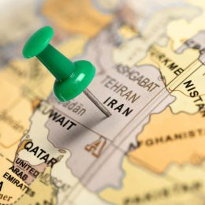

اقتصاد ایران کجای جهان است؟
گوینده : سارا صالحیان فرد
اقتصاد ایران در جهان در جایگاهی خاص قرار دارد، با توجه به منابع طبیعی غنی، به ویژه نفت و گاز. با وجود پتانسیلهای اقتصادی، ایران با چالشهایی هم مواجه است؛ از جمله تحریمهای بینالمللی، مشکلات مدیریتی و اقتصادی داخلی، و نوسانات ارزی.
### موقعیت اقتصادی:
1. **رتبه جهانی**: ایران در بین کشورهای جهان در تولید نفت و گاز در صف اول قرار دارد و به عنوان یکی از بزرگترین دارندگان منابع انرژی شناخته میشود.
2. **تنوع اقتصادی**: علاوه بر نفت، بخشهای کشاورزی، صنعتی و خدمات نیز نقش مهمی اقتصاد ایفا میکنند.
3. **چالشها**: تحریمها و نوسانات اقتصادی باعث شدهاند که
به طور کلی، اقتصاد ایران با وجود ظرفیتهای بالایی که دارد، به عوامل مختلفی بستگی دارد که میتواند بر جایگاه آن در جهان تأثیر بگذارد.